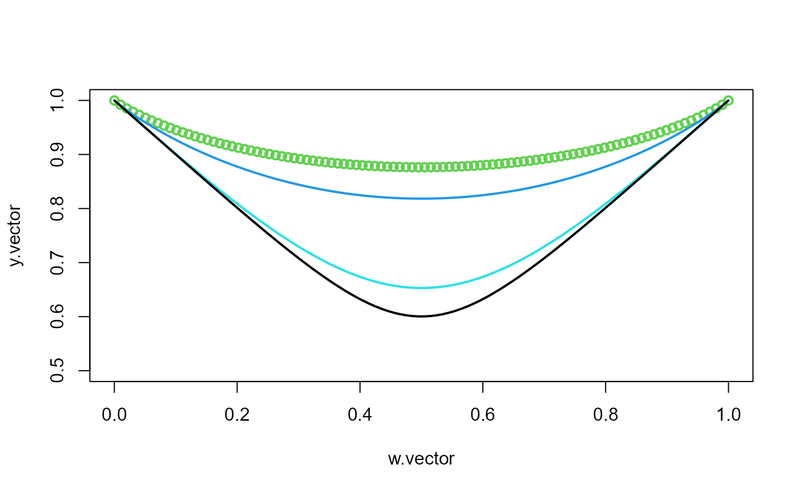

Afunction.Rdthe Pickands dependence function \(A\) in survival MGL-EV copula
Afunction(w, param)\(w \in [0,1]\).
copula parameter in survival MGL-EV copula.
the value of the Pickands dependence function in \([0.5,1]\)
In the bivariate case \(d=2\) the stable tail dependence function \(\ell\) can be represented in terms of the Pickands dependence function \(A\):
$$
\begin{align}
A_{\delta}\left(w\right)=w I_{{\frac{1}{2}, \frac{1}{\delta}+\frac{1}{2}}}\left[\frac{\left(1-w \right)^{-\delta}}{\left(1-w \right)^{-\delta} + w^{-\delta} }\right] + \left(1-w\right) I_{{\frac{1}{2}, \frac{1}{\delta}+\frac{1}{2}}}\left[\frac{w^{-\delta}}{\left(1-w \right)^{-\delta} + w^{-\delta} }\right].
\end{align}
$$
where \(A_{\delta}\) is the Pickands dependence function of survival MGL-EV copula.
Here \(I_{m,n}^{-1}()\) denotes the inverse of the beta cumulative distribution function \(I_{m,n}()\) (or regularized incomplete beta function)
with parameters shape1 = m and shape2 = n
implemented by R's qbeta and pbeta respectively.
The extreme value copula \(\bar{C}^{MGL-EV}\) of the survival MGL copula is given by $$ \bar{C}^{MGL-EV}(u_1,u_2;\delta)=\exp\left[\log\left(u_1u_2\right)A_{\delta}\left(\frac{\log\left(u_2\right)}{\log\left(u_1u_2\right)}\right)\right]. $$
Afunction(w = 0.7, param = 1.2)
#> [1] 0.8200312
delta <- 0.7
w.vector <- seq(0.0001, 0.9999, length.out = 100)
y.vector <- Afunction(w = w.vector, param = delta)
plot(w.vector, y.vector, lwd = 2, col = 3, ylim = c(0.5, 1))
delta <- 1
w.vector <- seq(0.0001, 0.9999, length.out = 100)
y.vector <- Afunction(w = w.vector, param = delta)
lines(w.vector, y.vector, lwd = 2, col = 4)
delta <- 3
w.vector <- seq(0.0001, 0.9999, length.out = 100)
y.vector <- Afunction(w = w.vector, param = delta)
lines(w.vector, y.vector, lwd = 2, col = 5)
delta <- 5
w.vector <- seq(0.0001, 0.9999, length.out = 100)
y.vector <- Afunction(w = w.vector, param = delta)
lines(w.vector, y.vector, lwd = 2, col = 1)
